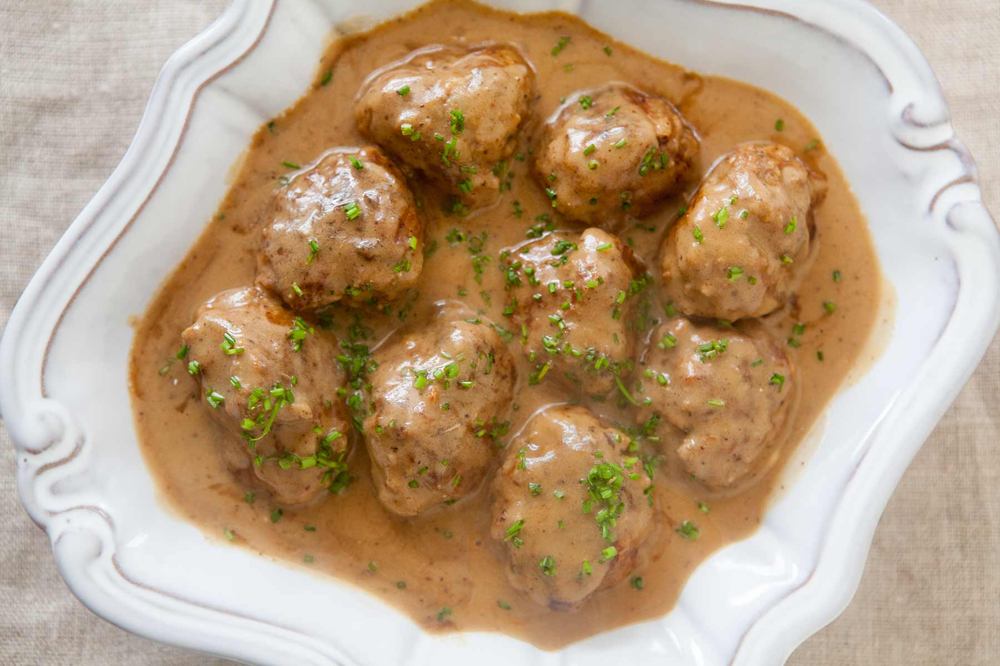

Our Signature Meatballs
Ingredients
- 1 pack of Our Signature Meatballs
Directions
- Remove the meatballs from the package. and put on a plate.
- Microwave for 2 minutes.
- Enjoy!
Nutrition facts
- Total Fat 30.69g - 60%
- Saturated Fat 1.394g - 0.7%
- Polyunsaturated Fat 0.163g
- Monounsaturated Fat 1.57g
- Cholesterol 21mg - 0.2%
- odium 134mg - 0.6%
- Potassium 60mg
- Total Carbohydrate 2.12g - 0.1%
- Dietary Fiber 0.1g - 0%
- Sugars 80.42g - 38%
- Protein 3.47g
Comments
-- [Wed 07 Sep 9:59] by Niclas
-- [Wed 07 Sep 10:00] by Adam
-- [Wed 08 Sep 03:00] by Robin